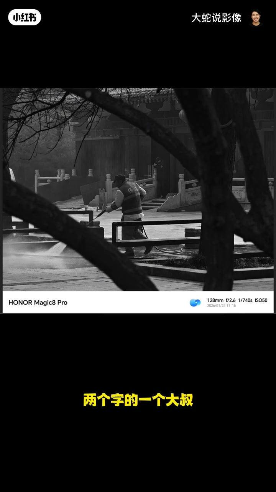
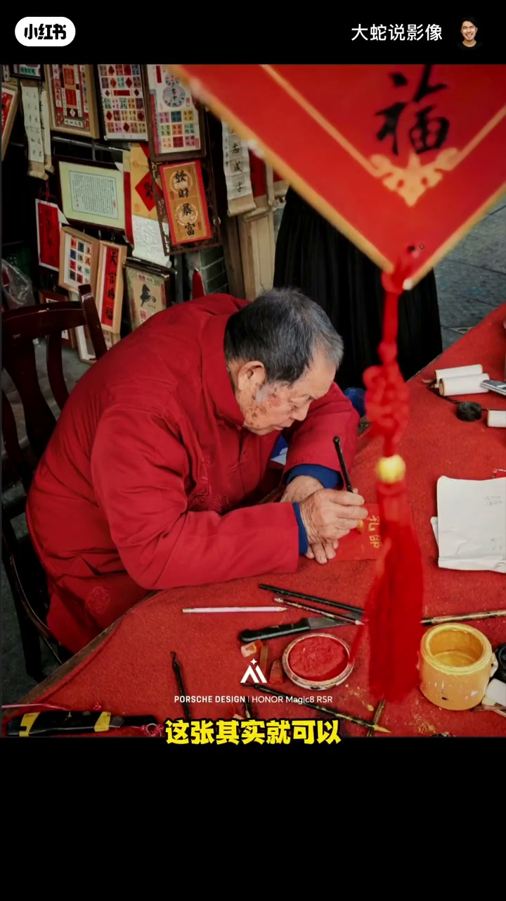
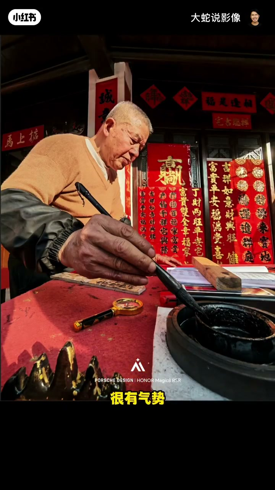

内容要点
第七期从「把美女拍清楚」打回原形：肢体僵硬、曲线与表情全垮。景区洗地一张古色场景撞上现代喷枪、保安与乱前景，叙事出戏。写春联系列：只拍手与字撑不起单张；半身老人叙事与眼睛都在，却被扭曲前景挡字；蘸墨逆光冲击力强，手部过黑与脸脱节。点评强调场景自洽、前景形状与明度衔接。
知识结构
清晰≠作品；手僵、表情垮、发丝乱。
古色地＋现代洗地工具／保安＝出戏。
特写不够；半身更好仍要治前景挡字。
气势与光感强；手黑脸亮脱节。
作品感来自动态、场景自洽与前景纪律；冲击力镜头也要检查局部明度是否「像同一人身上的手」。
00:00-00:30拍清楚的美女：动态与表情翻车
水平谈不上没作品感，但像踩香蕉皮要滑倒那瞬间——手僵、臂显粗、摸头假、裙摆曲线弱，表情像「欠几百万」，嘴不爽，头发一根螺丝翘出。00:10 原图。
00:30-01:14景区洗地：现代道具彻底出戏
古色景区里大叔戴现代帽、拿现代喷枪洗地，旁有现代保安，冲突强到像「行凶后洗血」；若换成应景扫把扫地才有叙事。前景几根乱叉挡视线，「不要在画面里疯狂画叉」。00:45。

01:14-02:28写字系列：从撑不起到半身可看
一组里只突出手与字的一张，质感叙事有，但红毡太大太脏、构图偏高，建议压低、字露一点、斜握笔、多留空间延伸。
半身老人写字叙事清楚、光感匀、眼睛可见，比上一张可看；前景遮挡物扭曲挡字过多，侧移重构会更好。01:50。

02:28-03:00蘸墨逆光：气势足，手黑脱节
执笔蘸墨逆光很有冲击力与明媚光感，虚实也不错；但手部过黑与明亮脸庞脱节，像手不属于他或刚在墨里蘸过。02:35。

完整转录（107段）
以下文本由 Whisper medium 模型自动转录，可能存在少量识别误差，已尽可能修正。
拍的水平可以看到
不能说是没有作品感
你说把一个美女拍清楚了
感觉被踩了香蕉皮
要滑倒那一瞬间按的
核心的问题是在于这个模特的肢体
你看这个手这里非常僵硬
这个手臂非常的粗
这个应该很有力气
还有一个就是整体的摸头的这一点
藏在后面这个人物的整个的动态很僵硬
裙摆没有显现出来
人物的曲线不够
还有表情
这个表情好像是欠了几百万一样
这个嘴还有点不爽的表情
头发也是一样
有一个螺丝这样跑出来
这张宝节园
这是在一个景区
少林寺还是什么地方
在喷水
这种冲突性太强了
本身这是一个古乡古色的地方
你这实际上是一个少林高层
拿个扫把在那扫地
那可能很应景
它会有一定的叙事性
你是一个写着宝节两个字的一个大叔
戴着比较现代的帽子
拿着个现代的喷枪在这里洗地
这是感觉好像刚刚
这是行凶之后
躺了一地的血
安排了人过来把地洗一下
这个非常的不符合
整个场景在这里面
另外还有一个这个保安也很现代
这两个现代的非常出戏
还有这前面这几根
这个前景用得非常糟糕
这是乱七八糟的
完全就没用好
不该挡这些东西
而且你挡也要挡少一点
不要真的疯狂的在画面当中画叉
一组照片里面的其中一张
按这样看
只能突出它的这个手和这个字
但是它是撑不起来一张
一张好的作品的
但整体来说
手的质感是保持住了
另外还有整个的叙事性也保持住了
画面不够捅捅
整体的构图稍微有一点点高了
应该压低一点
你看整体桌面的毯子这个毡子
红色的毡子太大了
因为它很脏
所以我们应该拉低一点
只拍到这根笔
老人抓着
这个字不用完全拍出来
交代一点就行了
斜着来抓着笔
背景再给多一点这种空间感
延伸感会好一点
只能说可惜了
你看这个就是一组的
应该就是这个老人
那这张拍的就比刚刚那个要好很多了
这张其实就可以判出这个人物在干什么
叙事性也OK了
另外还有光感上面也是相对均匀一点的
主体眼睛是可以看得到的
前面这一个前遮挡物
我觉得其实没有用好
一个是把具体在写什么这一块遮挡的有点多
另外一个这个作为遮挡物
它的形状不是很好
它是一个你看扭曲的
好像拧着的就有一点点怪
如果不用这个遮挡物的
我估计可能这里会露出一些黑色的东西
会露很多
所以他可能在考虑的时候用了一个前景
来去挡住黑色的东西
如果往边上一点
大概重新构图构到这儿来
有一点会好一点
整体的比刚才那张要有可看性
这张也是同类型的
这张也是挺有冲击力的
可以看到一个在写对联的一个老人
很有气势拿着一个笔正在站墨
这个整体阳光感也运用得很好
你会感觉这个很明媚
同时也很有光感也很有气势
但是这个光可能被什么东西遮住了
你可以看到这个整体手部这一块黑
和脸部的很明亮
你感觉这个手好像不属于它
或者是这个手在墨里面站了一下感觉黑黑的
但整体的虚实性还是不错的
好 我们今天这个就点评就到这了
谢谢大家了